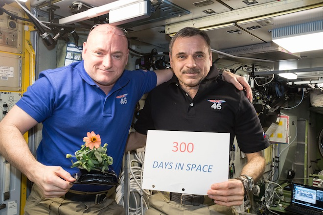

Космонавт, который провел год на МКС, рассказал о самочувствии
Российский астронавт Михаил Корниенко сообщил, что последний год, проведенный на Международной космической станции, дался ему гораздо легче, чем предыдущие экспедиции.
По словам космонавта, он чувствует себя значительно лучше после годового пребывания на орбите, чем после предыдущей миссии на МКС, длившейся шесть месяцев. Об этом участник экспедиции рассказал во время брифинга в Центре управления полетами. 2 марта международная группа космонавтов вернулась на Землю. В нее также вошли американец Скотт Келли (который, как и Корниенко, провел год в космосе) и россиянин Сергей Волков.
Кроме этого, Михаил Корниенко сообщил, что по возвращению на Землю работа не останавливается: с космонавтами продолжают проводить массу экспериментов.
19 марта на Международную космическую станцию отправится следующая миссия под командованием представителя НАСА Джеффри Уильямса. В экспедиции также примут участие два космонавта от «Роскосмоса» Алексей Овчинин и Олег Скрипочка.